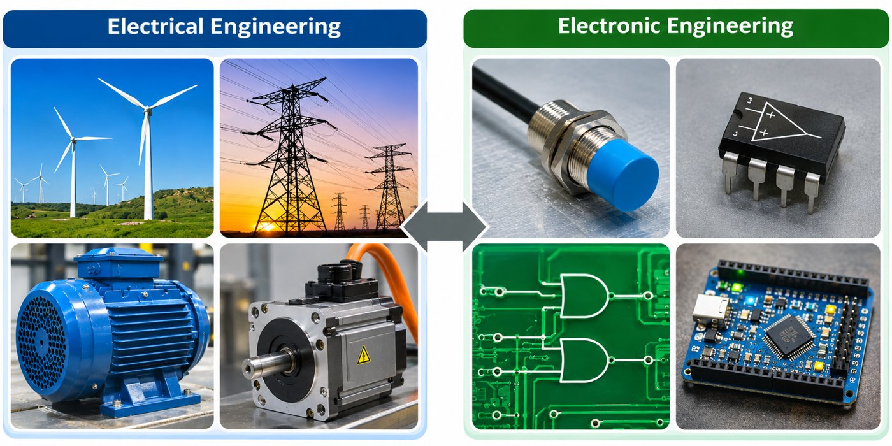
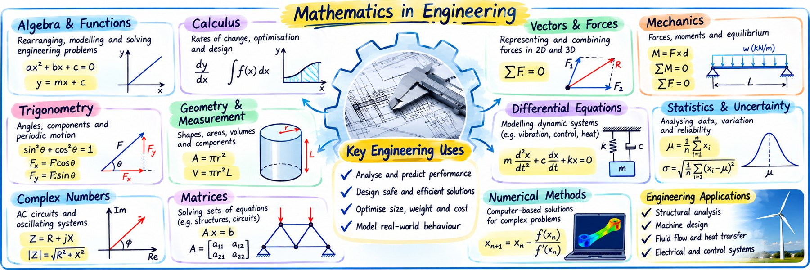
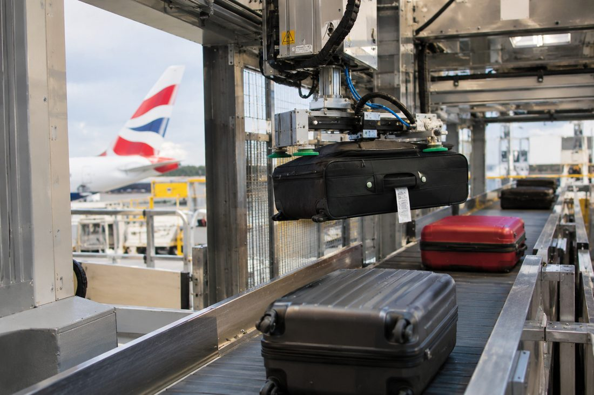
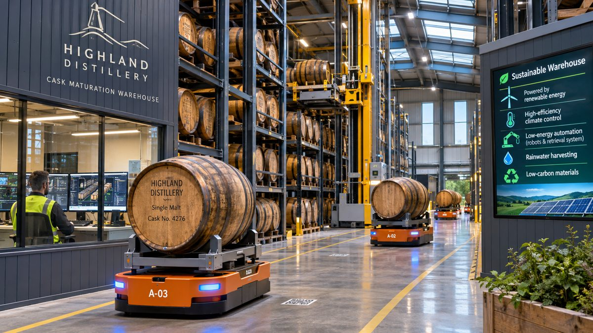
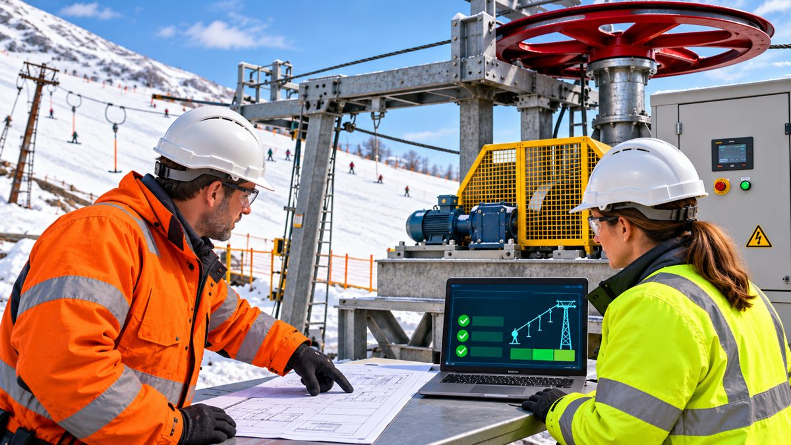
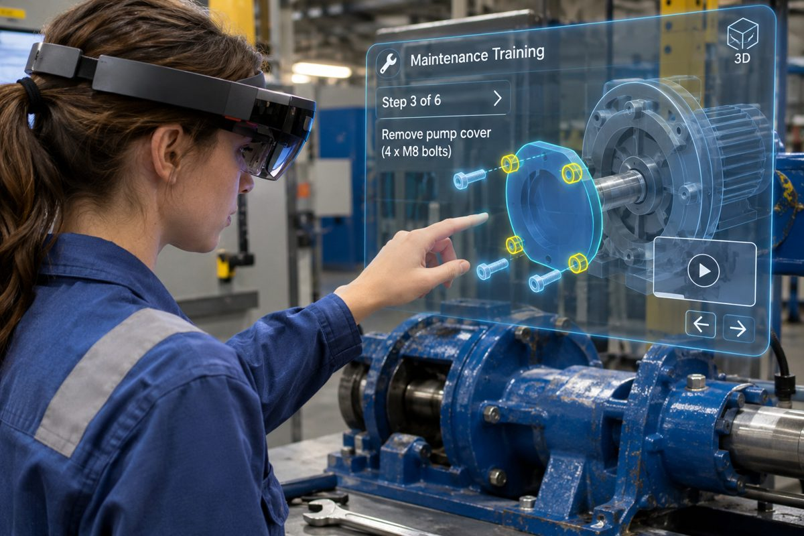

Section 1: Engineering Disciplines at Higher
Higher questions usually name a particular kind of engineer and ask what they would do, what skills they would use, or what knowledge they would need, in the context of the project described. The course specification names six disciplines, and these are the only ones you will be asked about: civil, structural, mechanical, electrical, electronic and environmental engineering.
| Discipline | What they are responsible for | Typical specialist knowledge | Typical skills |
|---|---|---|---|
| Civil | roads, railways, bridges, dams, tunnels, power stations, water and sewerage systems; assessing whether a site is suitable for construction | ground conditions and geology; properties and costs of concrete, steel and aggregates; drainage systems; construction techniques and planning regulations | surveying and analysing site data; evaluating ground suitability; modelling site layouts in CAD; estimating material quantities and project costs |
| Structural | analysing and designing structures and choosing their materials so they are strong, stable and rigid enough to carry their loads safely | material properties (strength, elasticity, ductility, brittleness); available standard cross-sections; material costs; construction and joining techniques; safety standards | calculating forces in frames (nodal analysis), moments and support reactions; calculating stress, strain, Young’s modulus and factor of safety; testing materials and interpreting stress/strain graphs; modelling and simulating loads |
| Mechanical | anything that moves: from small mechanisms to engines, vehicles, machinery and large plant; drive systems and pneumatics | types of gears, belts, chains, couplings and bearings; available ‘off the shelf’ components and their ratings (e.g. water pumps, electric motors); friction, lubrication and material properties; standard pneumatic components; manufacturing processes and costs | designing and calculating drive systems (gear ratios, torque, power and efficiency); designing, simulating and building sequential pneumatic circuits; modelling moving assemblies in CAD; testing prototypes |
| Electrical | power generation and distribution, power systems, and electrical installations | characteristics of generators and transformers; cable ratings and insulation properties; grid distribution standards; electrical safety and protection regulations | calculating electrical energy, power and system efficiency; sizing cables and transformers; designing and testing power distribution circuits; carrying out energy audits |
| Electronic | automatic control: designing sensing circuits, planning and writing programs, and checking the system works efficiently | characteristics of sensors (LDRs, thermistors), transistors (BJTs, MOSFETs) and op-amps; logic gate behaviour; microcontroller hardware; component ratings and costs | designing and calculating voltage dividers, transistor circuits and op-amp gain; constructing truth tables, Boolean expressions and logic diagrams; writing, simulating and testing microcontroller programs; designing closed-loop control systems |
| Environmental | protecting people and wildlife from pollution; reducing a project’s environmental impact and carbon footprint; recycling, water and air quality, waste management | sustainable and recycled material availability; environmental regulations and emissions standards; local ecology; waste management routes; renewable energy technologies | carrying out energy audits and calculating energy losses and efficiency; estimating carbon footprints; evaluating the environmental impact and sustainability of design options; surveying sites to monitor that pollution is kept within acceptable limits |
You will also come across other branches, such as chemical engineering (corrosion protection, fuels, plastics and batteries) and software engineering (writing, testing and debugging control code). It is useful to know they exist, but exam questions will not ask about them.
Electrical and electronic engineering are easily confused. Electrical engineers deal with power — generating it, distributing it and using it in motors. Electronic engineers deal with control — the sensing circuits, op-amps, logic and microcontrollers that decide what a system does. Exam questions treat them as separate disciplines with different roles, skills and knowledge.

Large projects need engineers from many disciplines. A tidal energy scheme, for example, needs civil engineers for the seabed foundations, structural engineers for the turbine supports, mechanical engineers for the turbine and gearbox, electrical engineers for the generator and grid connection, electronic and software engineers for the control and monitoring systems, and environmental engineers to assess the effect on marine life.
Section 2: The Professional Engineer Within a Project
Every engineering project passes through a series of phases. Exam questions often name the phase (“during the design phase…”, “during the development phase…”), and your answer must fit that phase. The phase words you are most likely to meet are design and development, followed by testing, construction and maintenance, and occasionally planning. The diagram below uses those words.
Communication
A professional engineer spends much of their time communicating, because no engineer can complete a project alone. They must communicate with:
- the client — to agree the brief and specification, and report progress and costs;
- other engineers — so that sub-systems designed by different disciplines fit and work together (for example, the electronic engineer must know the motor the mechanical engineer has chosen);
- contractors and technicians — through drawings, specifications and instructions, so the design is built correctly;
- the public and regulators — through consultations, planning applications and safety reports.
Engineers communicate using CAD drawings and 3D models, technical reports, specifications, calculations, presentations, meetings, and shared digital models that every discipline can update.
Team working
Projects are carried out by multi-disciplinary teams, usually led by a project manager. Good team working means each engineer understands their own responsibilities and how their work affects others. Regular design reviews catch problems early, when they are cheap to fix. Team working also means sharing risk: decisions about safety are checked by more than one person.
Section 3: Roles, Skills and Specialist Knowledge
Exam questions ask separately for roles, skills and knowledge, so you need to know the difference.
A skill is something an engineer is able to do: design, calculate, simulate, analyse, justify or evaluate part of the project. Knowledge is what they need to know to be able to use that skill. For example, the skill of calculating the cross-sectional area of a beam depends on knowledge of the material’s strength and the idea of factor of safety.
| Engineer and context | A role | A skill | A piece of knowledge |
|---|---|---|---|
| Civil engineer — launch site for a rocket | designing the foundations so the launch pad is strong and stable | analysing survey data to choose a suitable location | knowledge of ground conditions to choose the foundation type |
| Structural engineer — viewing platform on a cliff-top visitor centre | checking the structure can carry visitors and wind loads safely | calculating forces in members using nodal analysis | knowledge of material properties to select a suitable section |
| Mechanical engineer — vehicle lift in a garage workshop | designing the drive system to raise vehicles at a safe speed | calculating gear ratios to achieve the required lifting speed | knowledge of bearings to reduce friction in the drive |
| Electronic engineer — robot vacuum cleaner for the home | designing the control system that detects obstacles | planning the program logic for how the robot responds to its sensors | knowledge of sensors to choose a suitable obstacle detector |
| Environmental engineer — new secondary school building | selecting sustainable materials to reduce environmental impact | carrying out an energy audit to reduce the building’s running energy | knowledge of waste management to plan recycling during construction |
Specialist knowledge can also be named directly — for example knowledge of Ohm’s law, nodal analysis, geology or energy-auditing techniques — as long as it is relevant to that engineer and to the context in the question.
How engineers apply mathematics

A question you may meet is “Describe how a mechanical (or structural) engineer applies mathematics…”. The marking instructions want a specific mathematical process linked to a specific purpose in the context. Each example must be different. The calculations you do in this course are the best source of answers:
| Engineer | Mathematical process and purpose |
|---|---|
| Civil | calculating material volumes and quantities from site survey data to estimate project costs; calculating gradients and drainage capacities to prevent flooding; calculating foundation areas to ensure the ground can safely support structural loads |
| Structural | using nodal analysis and trigonometry to calculate the magnitude and nature of forces in frame members; taking moments to calculate support reaction forces; using stress and factor of safety equations to calculate the required cross-sectional area of a member; calculating Young’s modulus and elastic strain energy to compare and select suitable materials |
| Mechanical | calculating gear ratios to achieve the required output speed; using torque and power equations to select a suitable motor; using force, pressure and area equations (P = FA) to size pneumatic cylinders; calculating reservoir volume to set pneumatic time delays; calculating mechanical efficiency to identify and reduce energy losses |
| Electrical | using electrical power and energy equations (P = VI, Ee = VIt) to size cables, generators and transformers; calculating electrical efficiency and energy losses during energy audits to minimise waste in power distribution |
| Electronic | using the voltage divider rule to calculate resistor values for a sensing circuit; calculating op-amp gain to scale a sensor signal to the required output voltage; calculating base current and current gain (hFE) to choose a suitable transistor that will switch the load correctly; using Boolean algebra to simplify logic circuits and reduce the number of gates needed |
| Environmental | carrying out energy audits and calculating efficiency to reduce a system’s energy consumption; calculating energy losses to identify where waste can be minimised; estimating carbon emissions to compare the environmental impact of different design options |
Describe how a mechanical engineer applies mathematical skills when designing the pneumatic system. (1 mark)
Answers that would be accepted include: using P = FA to calculate the force from a cylinder, or the cylinder size and air pressure needed; calculating the mechanical power needed; calculating the reservoir volume needed to give a time delay. Each one names a calculation and links it to the pneumatic system in the question.
Section 4: Social and Economic Impacts
Every engineered solution affects people and money — some effects are positive, some negative. At Higher you must be able to describe both.
| Positive examples | Negative examples | |
|---|---|---|
| Social (effects on people and communities) | new jobs and training opportunities; better physical and mental health; improved infrastructure and easier travel; better access for people with disabilities; reduced stress or frustration | jobs lost when workers are replaced by robots or driverless vehicles; traffic disruption and noise during construction; loss of amenity or views; people left behind by new technology |
| Economic (effects on money, costs and the economy) | money brought into the area through tourism; new jobs, so more money is spent locally; lower running or energy costs; tax breaks or government incentives for reducing the carbon footprint; other companies attracted to invest in the area | high initial cost of equipment or construction, including meeting legislation (for example energy-efficiency standards); training and maintenance costs; lost income during changeover |
Section 5: Environmental Impacts and Sustainability
Environmental impacts can be positive (reducing emissions, saving resources, protecting habitats) or negative (pollution, habitat loss, use of finite resources, waste). Engineers consider these across the whole life cycle of a product or structure, not just while it is in use.
Questions an engineer asks about the environmental impact of a project include: will it destroy or create habitats for wildlife, and are schemes needed to protect them? Will green belt land be lost? Will it increase the demand on water or power supplies? Are the materials and manufacturing methods environmentally friendly and sustainable? Is there a waste-management and recycling plan for the construction?
- Extracting raw materials: mining and quarrying use energy and can damage landscapes; using recycled or renewable materials reduces this.
- Manufacture and transport: energy is used and emissions produced; sourcing materials locally reduces transport.
- Use: often the largest impact for products that use energy — improving efficiency reduces it.
- End of life: designing for disassembly lets parts be reused or recycled instead of going to landfill.
Sustainability
A sustainable engineering solution meets today’s needs without stopping future generations from meeting theirs. It balances all three kinds of impact: it must be environmentally responsible, socially acceptable and economically viable. A solution that is environmentally excellent but far too expensive to build, or cheap but harmful to the community, is not sustainable.
Ways engineers make solutions more sustainable include using renewable energy, improving efficiency, choosing recyclable and low-carbon materials, designing products to last and to be repaired, and reducing waste during construction.

(a) Describe one positive and one negative environmental impact of this development. 2
(b) Describe one beneficial and one adverse social impact of building this network. 2
Section 6: Emerging Technologies
An emerging technology is one that is still being researched, developed and tested — often in university laboratories or company research and development departments — but is not yet commercially available or in widespread use. When planning a project, an engineer asks: is something being developed that would make this project cheaper or more efficient? Is there a new material or process better suited to the task? Could it be powered in a more environmentally friendly way? Exam questions may describe a technology you have never met and ask about its impacts, so apply the same social, economic and environmental thinking.
Which technologies count as emerging changes over time. 3D printing, virtual reality headsets and large battery storage systems were all emerging technologies not long ago; today they are sold commercially and widely used, so they are no longer good examples. They are still developing and improving, but that does not make them emerging.
A good example of a genuinely emerging technology is nuclear fusion power. Fusion has been in development for decades, and experimental reactors have produced fusion energy, but no fusion power station yet supplies electricity commercially, and that is unlikely for at least another ten years.
When you describe an emerging technology, think in terms of cause and effect: what does it do, and what effect will that have? For example: “Fusion power stations would generate large amounts of electricity without burning fossil fuels, reducing the carbon dioxide released into the atmosphere.” Or: “Artificial-leaf technology is being developed to copy photosynthesis, using sunlight to split water into hydrogen and oxygen. The hydrogen could power transport, reducing the greenhouse gases released into the atmosphere.”
Emerging or established?
Decide whether each technology is emerging or already established, then click the card to check.
Use the World Economic Forum: Top 10 Emerging Technologies of 2026 report to choose one emerging technology and write a 500-word report. Your report must include:
- Description of the technology — what problem does it solve, how does it work, and what makes it an emerging technology rather than an established commercial product?
- Where it is being developed — name at least one university, research institute, company or pilot project working on it (where information is available), and identify which engineering disciplines are involved.
- Potential impacts — describe both positive and negative potential impacts in all three categories: social (people, health, jobs, safety, daily life), economic (costs, investment, new industries, effects on existing markets) and environmental (energy use, carbon emissions, materials, waste, ecosystems).
- Sources — list the websites or articles you used at the end of your report (these do not count towards the 500 words).
- Everything-to-grid energy (electrical, electronic and software engineering)
- Direct lithium extraction (chemical, civil and environmental engineering)
- Passive radiative cooling materials (structural and environmental engineering)
- PFAS destruction (chemical and environmental engineering)
Section 7: Exam-Style Questions
In the question paper, engineering roles and impacts share a 10–17 mark allocation (out of 110) with the systems approach and energy and efficiency. Individual questions on roles and impacts are usually worth 1 or 2 marks each and are found inside longer questions about a particular system. Answer in full sentences, and make each point different.
Question 1 — Whisky warehouse automation
A distillery is building a new automated warehouse in which robots move casks of maturing whisky. The company also wants the warehouse to be as environmentally friendly as possible.

Question 2 — Mountain ski tow
A ski centre is replacing an old ski tow with a new one. A mechanical engineer is responsible for the drive system and an electronic engineer for the control system.

Question 3 — Augmented reality in engineering training
An engineering firm is introducing augmented reality headsets that overlay instructions and 3D models onto real equipment during maintenance training.

Section 8: Would It Get the Mark?
These answers cover the whole unit. Decide whether each one would get the mark, then read the feedback.
Section 9: Optional Extension — Critical Analysis Project
Choose one of the topics below, or another agreed with your teacher, and carry out a critical analysis of an engineered solution to a contemporary problem. Research it and present your findings as a short report or presentation.
| Contemporary problem | An engineered solution to analyse |
|---|---|
| Reducing carbon emissions from electricity | floating offshore wind turbines in deep Scottish waters |
| Poor air quality in city centres | low emission zones and electric buses in Scottish cities |
| Heating homes without gas | heat pumps and district heating schemes, including heat from flooded mine workings |
| Connecting island communities | battery-electric or hybrid ferries |